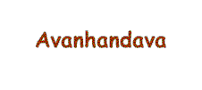
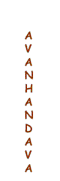

Nó Direito
É um nó de utilidade geral e de aplicação comum; serve para unir
cabos de mesmo diâmetro ou espessura, amarrar um pacote, prender uma atadura, rizar a
vela, etc.Observe que os dois chicotes de cada um dos cabos devem entrar pela volta
formada pelo outro cabo.
Volta da Fiel
É um nó muito útil e muito empregado no início ou na terminação de amarrações.
Utilizado em estacas, cercas e trabalhos de acampamento e pioneiria apresenta a vantagem
de deixar livre, se necessário os dois chicotes, com qualquer dos quais se pode
trabalhar, indiferentemente. Há vários modos de você fazer a volta da fiel, este é um
deles.
Volta redonda com 2 cotes

Este nó é bem útil. Serve para amarrar um cabo a um mastro ou verga e também a uma
argola ou arganéu apertando-o. O importante é fazer o cabo dar duas voltas em torno do
mastro para segurar bem apertado. Esta é uma das maneiras de faze-lo.
Lais de Guia

É um nó de grande utilidade, quando se necessita de uma volta, que não corra ou aperte.
É o nó indicado para salvamentos, devendo a volta ser suficientemente larga para ser
usada no peito e sob os braços da pessoa a ser içada.

|